Key Metrics
The Problem
Prices for the same product diverge across domains, regions, and categories — and sites change markup without warning. A naive scraper that parses on the fly loses history the moment a CSS selector breaks, and a flat URL list cannot express per-domain check intervals or currency normalization.
Watchdog treats targets as structured records (domain × region × category) with selector profiles, persists every raw snapshot losslessly, and runs the whole flow as an orchestrated, quality-gated pipeline instead of a cron script.
Architecture
Airflow orchestrates stages; Celery executes browser work; warehouse serves alerts + dashboard

Approach & Implementation
- Raw-before-parse: every fetch persists timestamped HTML first; parser fixes trigger Airflow backfills that re-parse history instead of losing it.
- Celery vs. Airflow separation: Celery runs per-target browser jobs (retryable, horizontally scalable); Airflow orchestrates stage dependencies, scheduling, and backfills above it.
- Dimensional warehouse: star schema with dim_domain/region/category/product, parser profiles, targets registry, and immutable fact_price_snapshot rows for trend and cross-region analysis.
- Structured targeting: (domain, region) resolves to a parser profile; currency normalization lives in one layer instead of per-parser hacks.
- Resilience: rotating user-agents, randomized pacing, per-domain circuit breakers, dead-letter retries, and selector-break detection on consecutive nulls.
- Alerts & analytics: per-target drop thresholds via a common Notifier interface (Telegram + SMTP), plus a Streamlit dashboard for trends, highs/lows, and scraper health.
Challenges & Solutions
Challenge: Selector rot destroys history
Sites rename price classes; a parse-on-fetch design would silently record months of nulls with no recovery path.
Solution: Lossless snapshot store
Raw HTML is keyed by run and never discarded, so a fixed parser plus an Airflow backfill DAG restores the full price series.
Challenge: Orchestration vs. execution confusion
One scheduler doing both DAG ordering and browser fan-out becomes a bottleneck and a retry mess.
Solution: Two-tier split
Airflow owns stage ordering and monitoring; Celery + Redis owns concurrent Playwright execution with independent retries and Flower visibility.
Challenge: Alert noise across regions
Currency and locale formatting differences caused false drop alerts on identical underlying prices.
Solution: Normalized thresholds
All prices normalize to a USD base before comparison, and thresholds are configured per target with separate price-drop vs. operational-health channels.
Outcome
Watchdog runs as a fully containerized production ETL with CI (lint → test → build), structured JSON logging, and Prometheus-ready metrics. Data-quality checks gate every load, and the dashboard turns the fact table into price trends, cross-region comparisons, and scraper reliability views.
The design rationale — raw-before-parse, Celery/Airflow separation, dimensional modeling — is what makes the system survivable: sites change, parsers break, and the data still recovers.